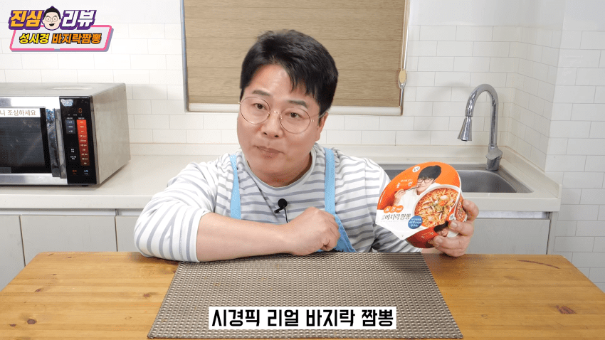
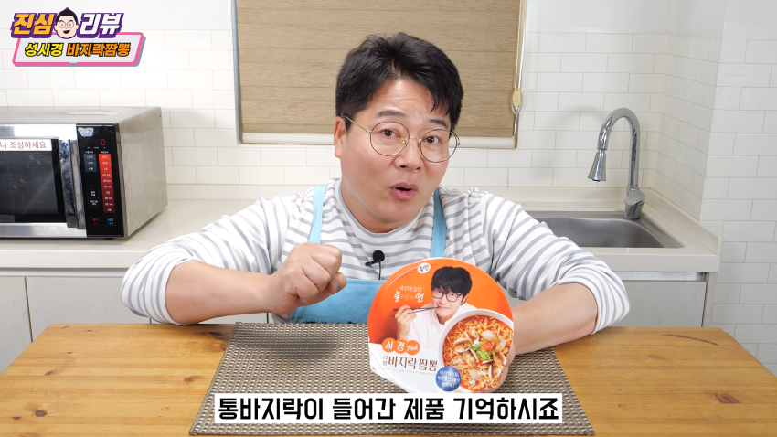
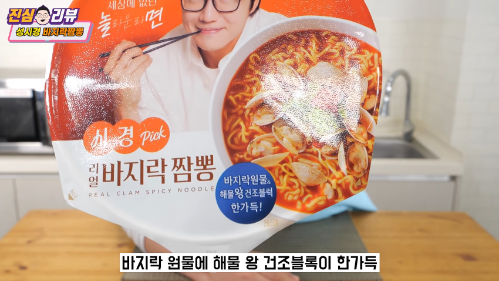
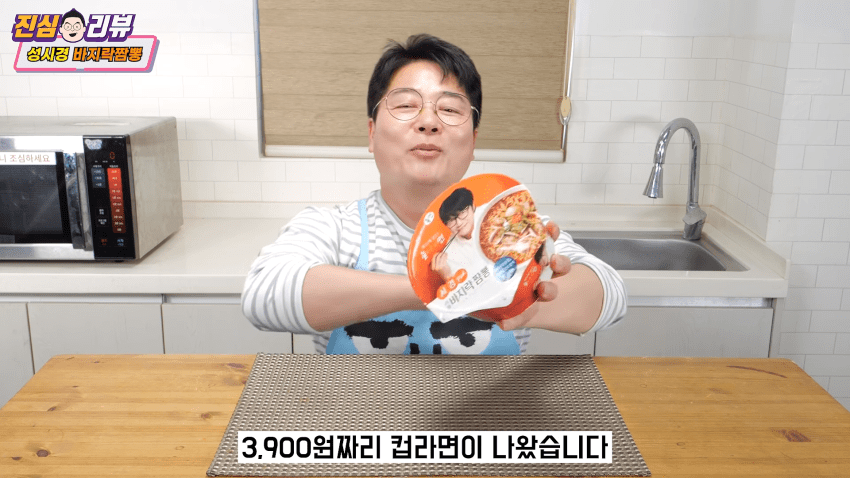
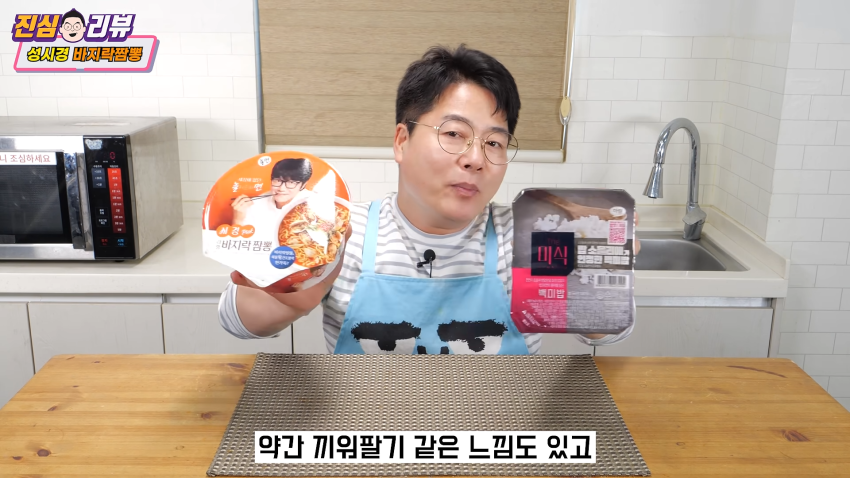
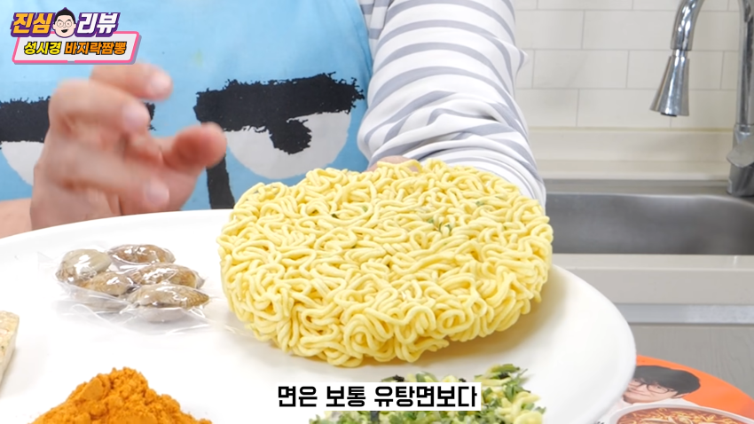
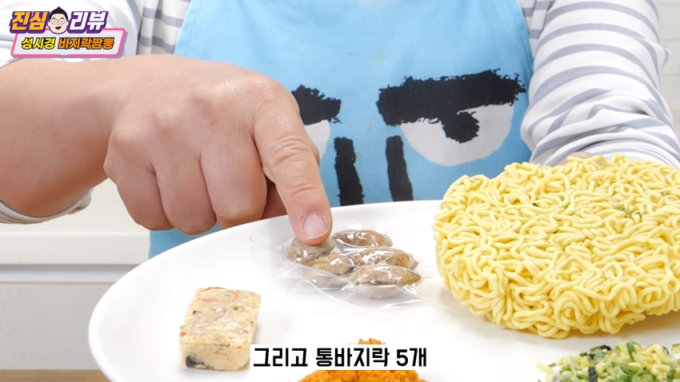
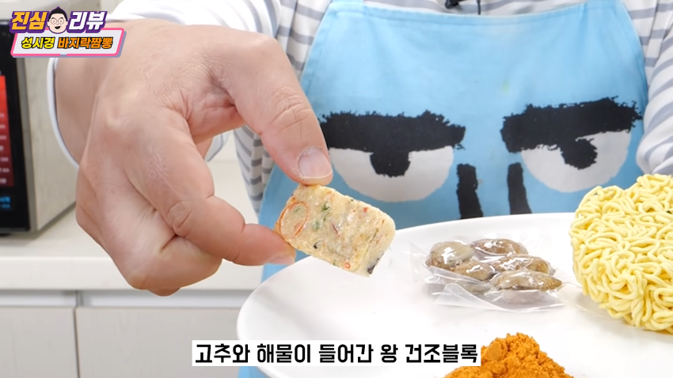
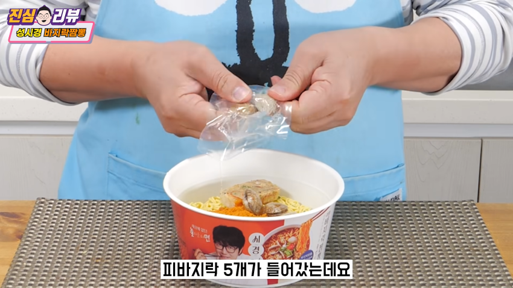
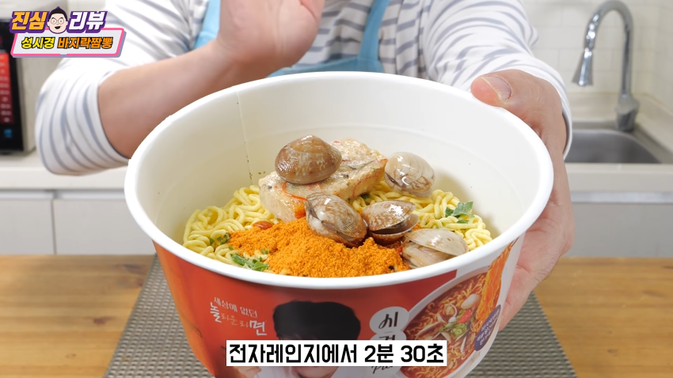
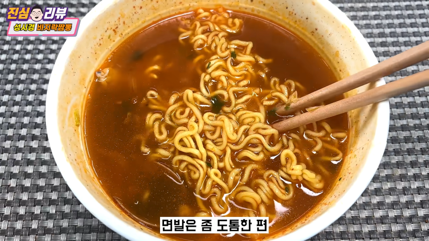
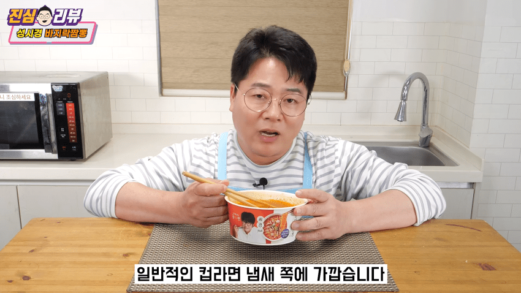
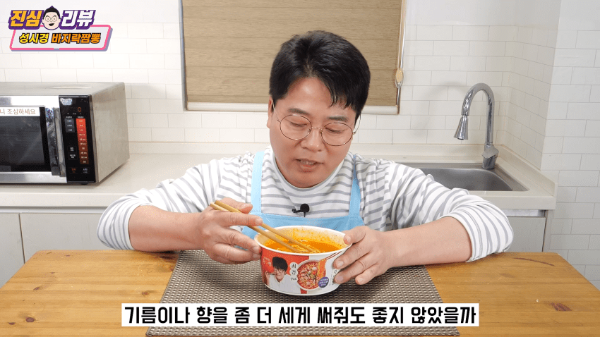
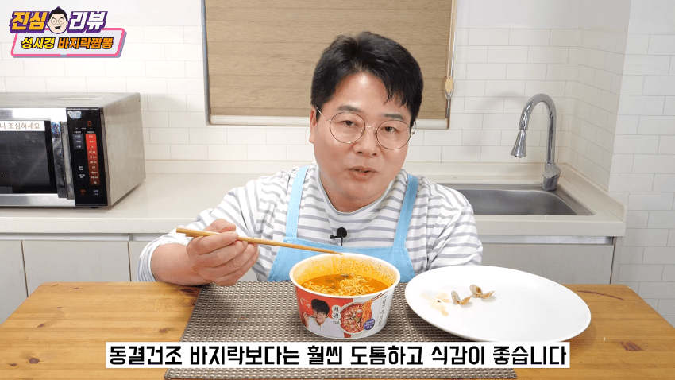
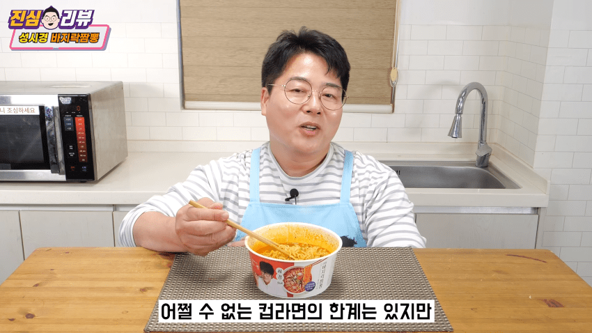
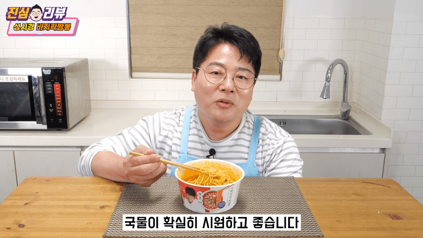
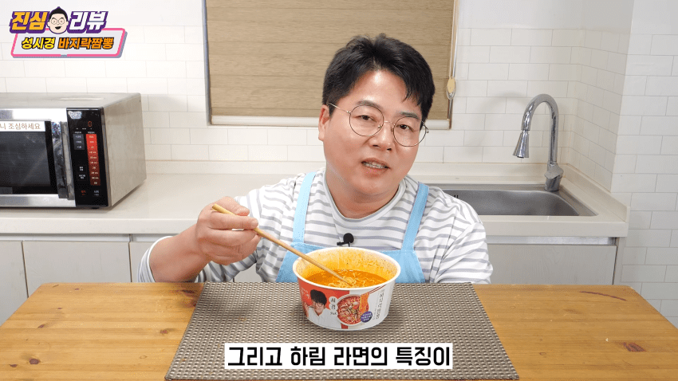
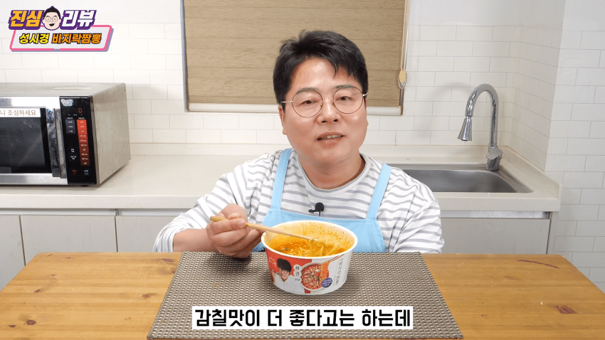
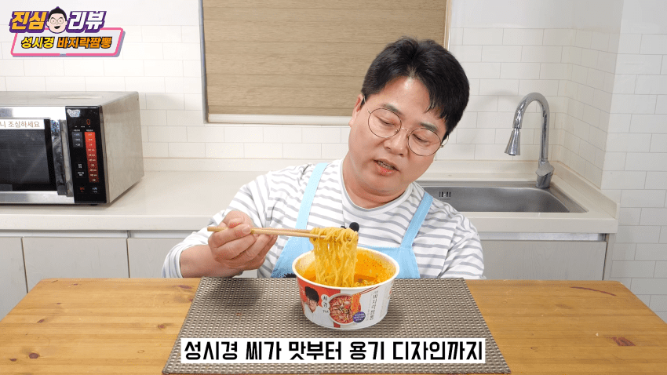
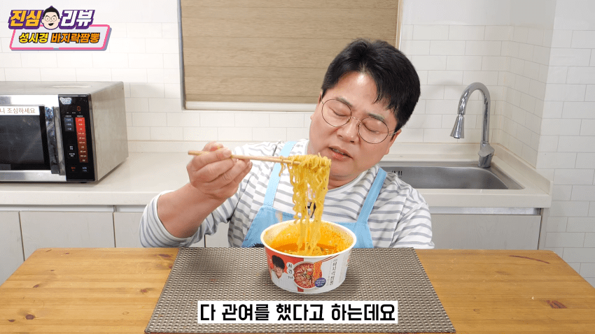
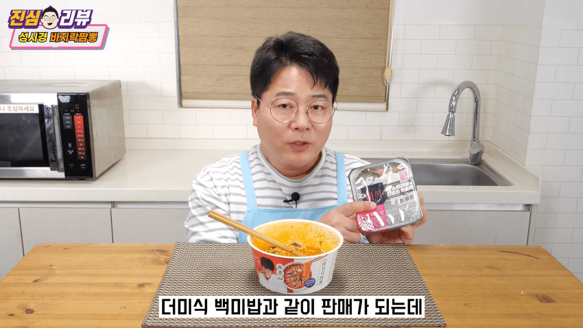
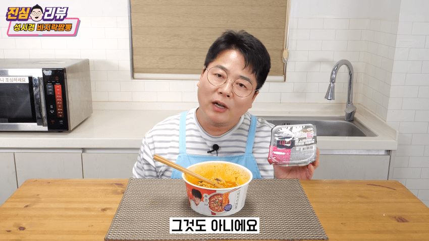
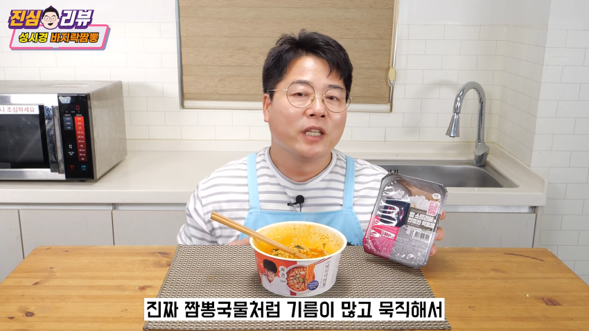
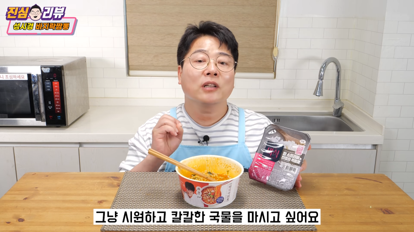
편의점 컵라면 치곤
가격쎈편이고 3,900
밥 말아먹는것도 그냥
칼칼 시원한 국물 좋아하면 추천할만할 생 바지락5개 들어간 짬뽕라면
댓글
수집 당시 댓글 197개
· ㅇㅇ · 11.23 07:09:46
· ㅇㅇ · 11.23 08:57:50
· ㅇㅇ · 11.23 08:58:27
· ㅇㅇ · 11.23 09:30:51
· ㅇㅇ · 11.23 09:33:33
· ㅇㅇ두개면정없어서ㅇ하나더 · 11.23 09:59:45
· ㅇㅇ · 11.23 10:02:21
· ㅇㅇ두개면정없어서ㅇ하나더 · 11.23 10:03:29
· ㅇㅇ · 11.23 10:04:10
· ㅇㅇ두개면정없어서ㅇ하나더 · 11.23 10:06:29
· ㅇㅇ · 11.23 10:07:51
· ㅇㅇ두개면정없어서ㅇ하나더 · 11.23 10:24:23
· ㅇㅇ · 11.23 10:27:37
· ㅇㅇ · 11.23 14:43:05
· ㅇㅇ · 11.23 15:00:27
· ㅇㅇ · 11.23 15:02:08
· ㅇㅇ · 11.23 15:02:29
· ㅇㅇ · 11.23 15:02:46
· ㅇㅇ · 11.23 15:05:20
· ㅇㅇ · 11.23 15:07:02
· ㅇㅇ · 11.23 15:09:08
· ㅇㅇ · 11.23 15:34:38
· ㅇㅇ · 11.23 15:36:44
· ㅇㅇ · 11.23 15:40:11
· ㅇㅇ · 11.23 15:41:09
· ㅇㅇ · 11.23 15:42:06
· ㅇㅇ · 11.23 15:47:06
· ㅇㅇ · 11.23 15:56:02
· ㅇㅇ · 11.23 15:59:30
· ㅇㅇ · 11.23 16:01:20
· ㅇㅇ · 11.23 16:04:02
· ㅇㅇ · 11.23 16:04:39
· ㅇㅇ · 11.23 16:05:12
· ㅇㅇ · 11.23 16:05:17
· ㅇㅇ · 11.23 16:06:06
· ㅇㅇ · 11.23 16:06:31
· ㅇㅇ · 11.23 16:06:34
· ㅇㅇ · 11.23 16:07:01
· ㅇㅇ · 11.23 16:07:21
· ㅇㅇ · 11.23 16:08:09
· ㅇㅇ · 11.23 16:09:23
· ㅇㅇ · 11.23 16:10:18
· ㅇㅇ · 11.23 16:11:48
· ㅇㅇ · 11.23 16:13:21
· ㅇㅇ · 11.23 16:14:32
· ㅇㅇ · 11.23 16:15:35
· ㅇㅇ · 11.23 16:17:27
· ㅇㅇ · 11.23 16:19:44
· ㅇㅇ · 11.23 16:20:35
· 계란라면 · 11.23 16:22:13
· ㅇㅇ · 11.23 16:22:19
· 계란라면 · 11.23 16:23:13
· ㅇㅇ · 11.23 16:54:55
· ㅇㅇ · 11.23 18:46:16
ㅇㅇ · 11.23 06:40:42
ㅇㅇ · 11.23 06:46:02
ㅇㅇ · 11.23 06:52:25
· ㅇㅇ · 11.23 08:13:59
ㅇㅇ · 11.23 06:54:42
· 랄랄라 · 11.23 12:29:57
ㅇㅇ · 11.23 07:01:24
ㅇㅇ · 11.23 07:21:55
autumnchanges · 11.23 07:36:41
ㅇㅇ · 11.23 07:49:39
ㅇㅇ · 11.23 08:13:02
ㅇㅇ · 11.23 08:22:41
문재인 · 11.23 08:27:40
ㅇㅇ · 11.23 08:38:24
· ㅇㅇ · 11.23 14:23:11
소봄쇼 · 11.23 08:48:10
ㅇㅇ · 11.23 09:12:33
ㅇㅇ · 11.23 09:13:20
ㅇㅇ · 11.23 09:15:12
ㅇㅇ · 11.23 09:19:34
ㅇㅇ · 11.23 09:24:28
ㅇㅇ · 11.23 09:52:14
· 랄랄라 · 11.23 12:32:20
ㅇㅇ · 11.23 10:03:33
· 천년주작 · 11.23 10:23:39
ㅇㅇ · 11.23 10:12:50
ㅁㅈㅎ
천년주작 · 11.23 10:23:22
ㅇㅇ · 11.23 11:11:58
ㅇㅇ · 11.23 11:16:03
ㅇㅇ · 11.23 11:56:02
이쿠욧 · 11.23 13:02:41
ㅇㅇ · 11.23 14:03:17
ㅇㅇ · 11.23 14:23:02
ㅇㅇ · 11.23 14:32:23
ㅇㅇ · 11.23 14:59:44
ㅇㅇ · 11.23 15:27:53
· 차원관문 · 11.23 16:40:35
ㅇㅇ · 11.23 16:08:44
ㅇㅇ · 11.23 16:39:55
ㅇㅇ · 11.23 16:46:21
ㅇㅇ · 11.23 17:04:48
ㅇㅇ · 11.23 17:38:26
ㅇㅇ · 11.23 18:15:44
최고의스테이지 · 11.23 18:25:40
ㅇㅇ · 11.23 18:30:42
ㅇㅇ · 11.23 20:17:49
암타황제강시현 · 11.23 01:15:13
· 앤드류그레이브스 · 11.23 01:16:17
· ㅇㅇ · 11.23 06:04:46
봇치쟝 · 11.23 01:16:28
· dd · 11.23 01:18:02
· ㅇㅇ · 11.23 02:18:41
· 봇치쟝 · 11.23 02:19:15
· 봇치쟝 · 11.23 05:42:13
· ㅇㅇ · 11.23 05:47:59
· 봇치쟝 · 11.23 05:50:13
· ㅇㅇ · 11.23 06:10:51
· 봇치쟝 · 11.23 06:11:32
· ㅇㅇ · 11.23 06:13:16
ㅇㅇ · 11.23 01:17:34
· ㅋㅋㅋ · 11.23 02:59:27
ㅇㅇ · 11.23 01:17:42
ㅇㅇ · 11.23 01:18:14
어딘가이상한사람 · 11.23 01:18:19
· ㅇㅇ · 11.23 01:38:26
ㅇㅇ · 11.23 01:18:19
신 석 열 · 11.23 01:22:32
· ㅇㅇ · 11.23 07:02:17
· ㅇㅇ · 11.23 08:55:02
ㅇㅇ · 11.23 01:22:58
ㅇㅇ · 11.23 01:23:10
· ㅇㅇ · 11.23 04:18:00
ㅇㅇ · 11.23 01:24:15
· ㅇㅇ · 11.23 02:02:34
· 211.108 · 11.23 02:50:35
· ㅇㅇ · 11.23 03:02:18
· ㅇㅇ · 11.23 04:14:38
· 워렌버핏 · 11.23 04:37:01
ㅇㅇ · 11.23 01:24:30
악의꽃 · 11.23 01:25:39
히이잉 · 11.23 01:25:49
와붕이 · 11.23 01:27:13
파치카 · 11.23 01:32:27
ㅇㅇ · 11.23 01:40:54
MR4오너 · 11.23 01:42:46
ㅇㅇ · 11.23 01:50:28
편의점 음식= 전부음쓰
ㅇㅇ · 11.23 02:06:23
디오니소스 · 11.23 02:07:01
ㅇㅇ · 11.23 02:08:31
llllllIllllll · 11.23 02:10:55
아카향 · 11.23 02:11:05
ㅇㅇ · 11.23 02:12:22
ㅇㅇ · 11.23 02:15:36
ㅇㅇ · 11.23 02:18:34
ㅇㅇ · 11.23 02:19:07
· ㅇㅇ · 11.23 12:13:10
· ㅇㅇ · 11.23 12:22:42
ㅇㅇ · 11.23 02:21:34
ㅇㅇ · 11.23 02:22:31
ㅇㅇ · 11.23 02:24:06
· ㅇㅇ · 11.23 02:24:48
· ㅇㅇ · 11.23 08:35:40
ㅇㅇ · 11.23 02:30:33
히이잉 · 11.23 02:31:11
ㅇㅇ · 11.23 02:31:40
ㅇㅇ · 11.23 02:42:26
ㅇㅇ · 11.23 02:42:40
ㅇㅇ · 11.23 02:49:22
ㅇㅇ · 11.23 02:53:56
2456778 · 11.23 02:55:21
· ansav454 · 11.23 03:08:15
· ㅇㅇ · 11.23 04:53:50
ㅇㅇ · 11.23 02:58:21
익명 · 11.23 03:00:43
ㅇㅇ · 11.23 03:02:33
ㅇㅇ · 11.23 03:24:49
히이잉 · 11.23 03:25:08
ㅇㅇ · 11.23 03:30:03
ㅇㅇ · 11.23 03:30:25
ㅇㅇ · 11.23 03:39:49
ㅇㅇ · 11.23 03:43:51
ㅇㅇ · 11.23 03:49:12
ㅇㅇ · 11.23 03:49:51
ㅇㅇ · 11.23 03:50:31
ㅇㅇ · 11.23 03:56:12
ㅇㅇ · 11.23 04:09:36
증거를친일천주새끼들 · 11.23 04:13:09
ㅇㅇ · 11.23 04:17:56
ㅇㅇ · 11.23 04:20:48
ㅇㅇ · 11.23 04:24:18
ㅇㅇ · 11.23 04:25:51
ㅇㅇ · 11.23 04:32:30
3900
ㅋㅋㅋ
ㅇㅇ · 11.23 04:33:23
ㅇㅇ · 11.23 04:54:52
ㅇㅇ · 11.23 05:20:41
ㅇㅇ · 11.23 05:36:17
ㅇㅇ · 11.23 05:40:54
ㅇㅇ · 11.23 05:49:09
· 랄랄라 · 11.23 12:25:40
ㅇㅇ · 11.23 05:56:47
ㅇㅇ · 11.23 06:08:15
ㅇㅇ · 11.23 06:15:37
· ㅇㅇ · 11.23 07:08:00